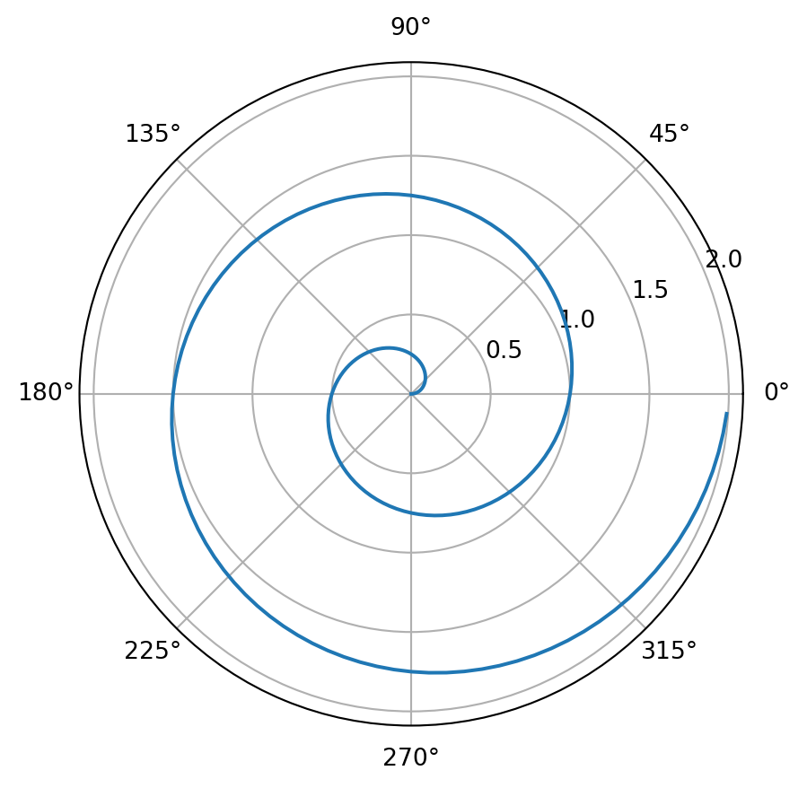

Code

MDPs are a classical formalisation of sequential decision making, where actions influence not just immediate rewards, but also subsequent situations, or states, and through those future rewards.
[!important] Reinforcement Learning has an underlying MDP, and the goal of reinforcement learning is to solve this MDP by deriving an optimal policy
Markov property, also called, memoryless property, is means that the future and the past are conditionally independent, given the present. Intuitively, this means that, if we know the present state, knowing the past doesn’t give us any more information about the future.
Mathematically, the probability that this agent then arrives at state \(s_{t+1}\) given their history of previous states visited and actions taken can be written as follows: ^history
\[ P(S_{t + 1} = s_{t + 1} | S_t = s_t, A_t = a_t, S_{t - 1} = s_{t - 1}, A_{t-1} = a_{t-1}, ..., S_0 = s_0) \]
The Markov property states that the above probability can be simplified as: \[ P(S_{t+1}=s_{t+1} | S_t = s_t, A_t = a_t) \]
In fact, these memoryless probabilities is encoded by the transition function: ^tf \[ T(s, a, s') = P(s' | s, a) \]
Markov Decision Process (MDP) is defined by several properties: * A set of state \(S\) * A set of actions \(A\) * A start state \(s_0\) * Possibly one or more terminal states * Possibly a discount factor \(\gamma\) * A transition function \(T(s, a, s')\): is a probability function which represents the probability that an agent taking an action \(a \in A\) from a state \(s \in S\) ends up in a state \(s' \in S\) * A reward function \(R(s, a, s')\): a reward at each step is assign to agent after it took a step. The agent’s objective is naturally to acquire the maximum reward possible before arriving at some terminal state. (The maximum is usually made by optimal policy)
It introduced to model an exponential decay in value of rewards over time. So the value function is \[ V(s) = \sum_{t=0}^{\infty}\textcolor{red}{\gamma^{t}}R(s_t, a_t, s_{t+1}) \]
According to geometric series, is the above function is guaranteed to be finite-values as long as the \(|\gamma| < 1\) \[ V(s) \leq \sum_{t=0}^{\infty}\gamma^tR_{max} = \frac {R_{max}} { 1- \gamma} \] where, \(R_{max}\) is the maximum possible reward attainable at any given timestep in the MDP.
[!Info] The \(\gamma\) value is selected strictly from the range \(0 < \gamma < 1\) since values values in the range \(−1 < \gamma ≤ 0\) are simply not meaningful in most real-world situations
Solving a Markov decision process, means finding an optimal policy \(\pi^* : S \rightarrow A\) a function mapping each state \(s \in S\) to an action \(a \in A\). An optimal policy is one that if followed by the agent, will yield the maximum expected total reward.
The optimal value of a state \(s, V^{*}(s)\) is the expected value of the utility an optimally-behaving (follow policy) agent that starts in \(s\) will receive, over the rest of the agent’s lifetime. The optimal value (Q-value) of a Q-state \(Q^*(s, a)\) is the expected value of the utility an agent receives after starting in \(s\), taking \(a\) and acting optimally henceforth ^q-value
Q-state, also know as action state, is the combine of agent in state \(s\), and take action \(a\)
The Bellman Equation for value function is define as follows: \[ V^*(s) = \max_{a} \sum_{s'} T(s, a, s')\left[ R(s, a, s') + \gamma V*(s')\right] \] For Q-value function is define as follows: \[ Q^*(s, a) = \sum_{s'} T(s, a, s')\left[ R(s, a, s') + \gamma V*(s')\right] \] \(R(s, a, s')\) is immediate rewards ^immediate-reward
[!Info] As showing above: \[ V^*(s) = \max_a Q^*(s, a) \]
The Bellman equation is an example of a dynamic programming equation. The Q-value is a weighted sum of utilities, with each utility weighted by the probability of\(T(s, a, s')\). This define the expected utility of action optimally from Q-state \((s,a)\)
The \(V^*(s)\) is the maximum expected utility over all possible actions from \(s\).
[!question] BE usage is as a condition for optimality. In other words, if we can somehow determine a value U(s) for every state s ∈ S such that the Bellman equation holds true for each of these states, we can conclude that these values are the optimal values for their respective states. Indeed, satisfying this condition implies ∀s ∈ S, \(V(s) = V^*(s)\)
To solve the optimal values, we need time-limited values. The time-limited value for a state \(s\) with a time-limit of \(k\) timesteps is denoted \(V_k(s)\), and represents the maximum expected value attainable from \(s\) given that MDP under consideration terminated in \(k\) timesteps.
Value iteration is a dynamic programming algorithm that uses an iteratively longer time limit to compute time-limited values until convergence \[\forall s,\ V_{k+1}(s) = V_k(s)\] It operates as follows: 1. \(\forall s \in S\), initialize \(V_0(s) = 0\). 2. Repeat the following update rule utile convergence: \[ \forall s \in S,\ V_{k + 1}(s) \leftarrow \max_a\sum_{s'}T(s, a, s')\left[R(s, a, s') + \gamma V_k(s') \right] \]
The Bellman Equation gives a condition for optimality, while update rule gives a method to iteratively update values util convergence. The above function for short is \[ V_{k + 1} \leftarrow BV_k \] where \(B\) is called the Bellman operator. which is contraction by \(\gamma\) .
The intuition behind policy extraction is very simple: if you’re in a state \(s\), you should take the action \(a\) which yields the maximum expected value.
\[ \forall s \in S, \pi^*(s) = \underset{a}{\mathrm{argmax}}Q^*(s, a) \]
[!Info] For performance reasons that it’s better for policy extraction to have the optimal Q-values of states, in which case a single
argmaxoperation is all that is required to determine the optimal action from a state.
Q-value iteration is a dynamic programming algorithm that computes time-limited Q-values. \[ Q_{k+1}(s, a) \leftarrow \sum_{s'}T(s, a, s')\left[R(s, a, s') + \gamma \max_{a'} Q_k(s', a') \right] \]
Value iteration can be quite slow. At each iteration, we must update the values of all \(|S|\) states, each requires iteration over all \(|A|\) actions. The computation of each of these Q-Values, requires iteration over each of \(|S|\) states again, leading to runtime of \(O(|S|^2|A|)\)
To solve this flaw, we can use policy iteration. It operates as follows: 1. Define an initial policy. 2. Repeat the following until convergence: 1. Evaluate the current policy with policy evaluation. For a policy \(\pi\) , policy evaluation means computing \(V^{\pi}(s)\) for all states \(s\), where \(V^{\pi}\) is expected value of starting in state \(s\) when following \(\pi\): \[ V^{\pi} = \sum_{s'}T(s, \pi(s), s')\left[ R(s, \pi(s), s' ) + \gamma V^{\pi}(s')\right] \] 2. Define the policy at iteration \(i\) as \(\pi_i\). We can updated value function
\[ V^{\pi_i}_{k+1} \leftarrow \sum_{s'}T(s, \pi(s), s')\left[ R(s, \pi(s), s' ) + \gamma V^{\pi_i}_k (s')\right] \]
3. Once evaluate the current policy, use **policy improvement** to generate a better policy: \[ \pi_{i+1}(s) = \underset{a}{\mathrm{argmax}} \sum_{s'}T(s, a, s')\left[ R(s, a, s') + \gamma V^{\pi_i}(s') \right] \]
For a demonstration of a line plot on a polar axis, see Figure 1.